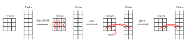
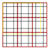

|
StencilStream
v2.0.0
Generic Stencil Simulation Library for FPGAs.
|
First, we have to lay down some terminology used in StencilStream:
| Word | Definition |
|---|---|
| static | defined at compile time, part of the design |
| dynamic | defined at runtime, part of the payload data |
| Cell | Fundamental element of StencilStream's architecture. Its type is user-provided and every cell has a value of this type. |
| Grid | A rectangular container of cells with a dynamic, arbitrary size |
| Grid width/height | The dynamic number of columns/rows in a grid |
| Stencil | A quadratic container with a central cell and all cells at a Chebyshev distance up to the stencil radius (extended Moore neighborhood) |
| Stencil radius | The static, maximal Chebyshev distance of cells in a stencil to the central cell |
| Stencil diameter | 2 * stencil_radius + 1, the width and height of the stencil |
| Tile | A rectangular container of cells with a static size |
| Tile width/height | The number of columns/rows in a tile |
| Transitition function | A function that maps a stencil (and additional information) to the next generation of the stencil's central cell |
| Tile Halo | Additional cells that are added to a tile to form an input tile |
| Grid Halo | Cells outside of the user-defined grid |
Rectangular containers in StencilStream are always organized in columns and rows. The first index is always the column index and the second index is always the row index. The origin is thought to be in the north-western corner. An example where every grid cell contains it's index:
Iteration over rectangular containers in StencilStream is always column wise, meaning that the row index is moving the fastest. An example of a for loop that iterates over a Grid with grid_width columns and grid_height rows:
The general goal of a stencil execution engine like StencilStream is to calculate a certain generation of a grid of cells where a single generation step of a single cell is computed from cell's neighbourhood (contained in the stencil). This is repeated iteratively over all cells of the grid and for all generations up to the desired generation.
However, the naïve approach of storing all cells in a buffer and reading the neihbourhood directly from this buffer doesn't work well for FPGAs. StencilStream therefore uses an approach introduced by Hamid Reza Zohouri, Artur Podobas and Satoshi Matsuoka that uses a spatially tiled buffer and temporal caching to perform the computations.
Let's look at the simplest case first: There is a tile and we want to calculate the it's next generation. StencilStream splits up this task into an input kernel, an execution kernel and an output kernel. They communicate via on-chip FIFO pipe and the input kernel receives access to the current generation of the tile while the output kernel receives access to buffers for the next generation of the tile. The input kernel reads the cells from the buffer column-wise (as discussed in "Indexing and Iteration order") and sends them to the execution kernel.
The execution kernel has an internal stencil buffer stored in registers and a cache stored in on-chip block memory. This cache has a width of stencil_diameter - 1 and is as high as the input buffer. When a new cell arrives from the input kernel, every cell in the stencil buffer is shifted to the north once and the new cell is placed in the south-eastern corner of the stencil buffer. The rest of the southern-most row is filled with cells from the cache. Then, the row in the cache is overriden with all the cells in southern-most row of the stencil buffer, except for the western-most cell in this row. In effect, this means that all cells in this row of the cache are shifted west once and the eastern-most cell in this row is set to the input. The following figure illustrates this:

After these shifts, the stencil buffer contains the correct neighbourhood of a central cell. Then, the transition function is executed and the result is sent to the output kernel. The row counter is increased and the next input is read.
Of course, the input and output of an execution stage do not necessarily have to come from the input or output kernel. StencilStream arranges multiple execution stages into a pipeline. This means that for a given pipeline length of p, the grid is only written to global memory every p generations and since the main loop of the execution kernel is pipelined itself, all of these p generations are calculated in parallel, utilizing the full potential of the FPGA. This long stream of values is also where the name "StencilStream" comes from.
In order to calculate the next generation of a cell, you need it's neighbourhood. This neighbourhood is included in the tile for almost all cells, but not for those on the edge of the tile. This means that in order to calculate the next generation of a tile, cells from neighbouring tiles are needed too. These cells are known as the halo of a tile. Since more cells are needed in the halo for every generation that is computed, the input tile has to contain stencil_radius additional cells in every cardinal direction. This leads us to an input tile with tile_width + 2 * stencil_radius * pipeline_lenth columns and tile_height + 2 * stencil_radius * pipeline_length rows.
The execution kernel described above works on tiles, which have a static size, but the user provides a grid, which has a dynamic size. Therefore, StencilStream needs to partition the grid into tiles. Since every tile also needs parts of neighbouring tiles for their halo, these tiles are partitioned into buffers too. Every tile has four corner buffers, four edge buffers and a core buffer. The following figure illustrates this partition, where the buffer borders are marked in black, tile borders are marked in red and the grid border is marked in yellow:

Note that the shapes of tiles and their buffers is static, but the number of tiles is dynamic and adapted to contain the whole grid. The input kernel receives access to all buffers of a tile as well as the neighbouring buffers from other tiles.
The last missing concept is StencilStream's grid halo handling. As one can see in the figure above, there are no neighbouring cells for all cells of the grid: There are no further cells at the northern and western edge of the grid and there are additional cells east and south of the grid. These cells belong to the grid halo and their value depends on the transition function in use. Some transition functions can simply leave those cells undefined and ignore them, some can use a default value and some might require something compldifferent.
StencilStream currently only supports transition functions with a default value, which is a superset of those that ignore missing cells. This default value, also known as halo value, is set in the StencilExecutor and StencilStream guarantees that this halo value will be present whenever a cell outside of a grid is accessed.
One last concept of note is the layout of the buffers themselves: The global memory interface of most FPGAs support burst accesses where a specific number of bytes can be read or written in one transaction. Therefore, those interfaces are most efficient when all memory accesses are organizsed in such bursts. StencilStream ensures this by using two-dimensional buffers with the "height" of one memory burst.